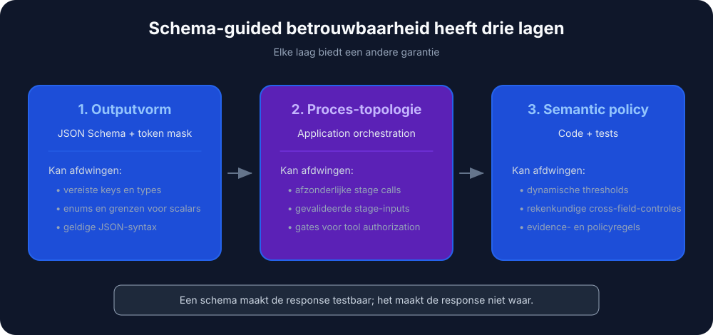
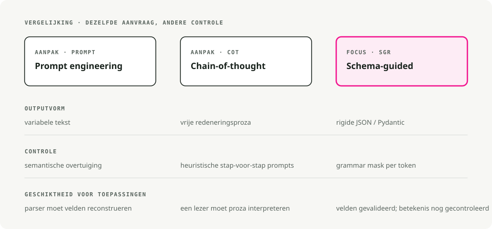
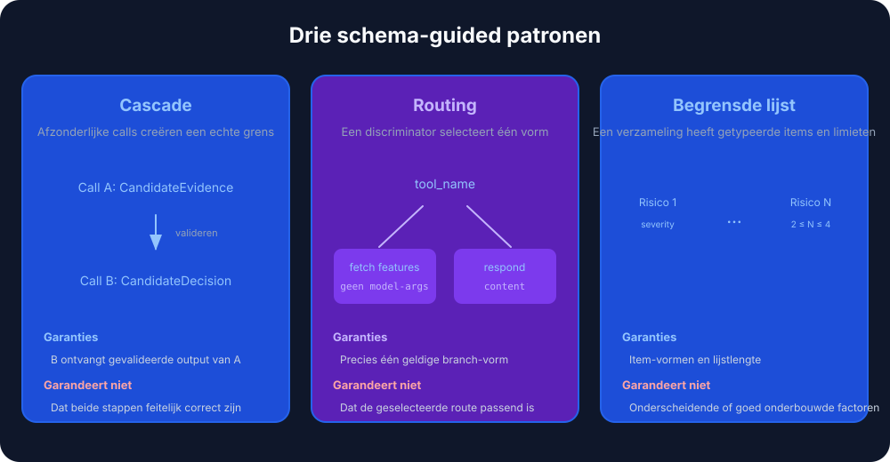
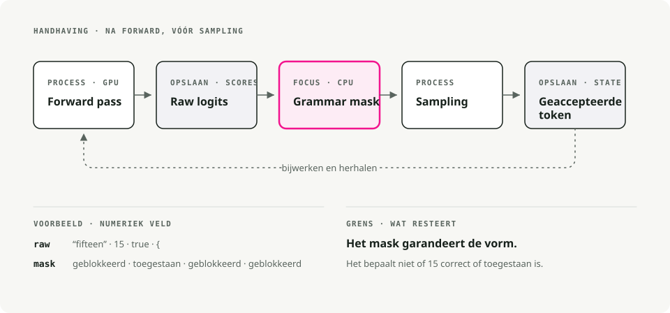
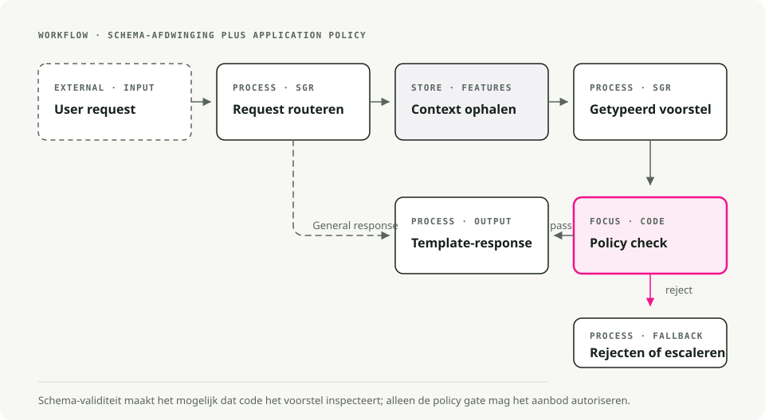

Automatische vertaling
Dit artikel is automatisch vertaald vanuit de oorspronkelijke Engelse versie.
Schema-Guided Reasoning op vLLM: Structured Outputs met xgrammar en Pydantic
Een retry-loop is een bekentenis. Het zegt: ik verwachtte dat het model geldige JSON zou teruggeven, dat deed het niet, dus ik gooi de dobbelstenen opnieuw. De meeste LLM-agentcode waar ik mee heb gewerkt leunt zwaar op retries, en de JSON blijkt nog steeds vaak genoeg kapot te zijn dat iemand er een alert voor inricht.
Schema-Guided Reasoning (SGR) slaat het retry-spel over door het schema op tokenniveau af te dwingen. Je definieert de reasoning-topologie als een Pydantic-schema, en de inference-engine maskert elk token weg dat het schema zou schenden vóór het samplen. De output is by construction geldig, niet dankzij retries.
TL;DR. SGR gebruikt constrained decoding om de output van een LLM vast te zetten op een Pydantic-schema dat jij beheert. Combineer het met de xgrammar-backend van vLLM en je krijgt elke keer geldige JSON, met verwaarloosbare latency-overhead.
Wat is Schema-Guided Reasoning?
Schema-Guided Reasoning is een techniek die Rinat Abdullin in 2024 heeft beschreven. In plaats van het model vrij tekst te laten aanvullen (wat inconsistent of ambigu kan zijn), geef je het een strikt template dat definieert:
- welke stappen het moet doorlopen, zodat het de analyse niet kan overslaan
- de volgorde van die stappen, zodat de redenering van data naar beslissing loopt
- waar het de aandacht op moet richten, zodat de diepgang terechtkomt waar die ertoe doet
Zie het als een cognitieve checklist die het model moet volgen.

Waarom SGR ertoe doet
Wanneer je een schema definieert met velden als churn_analysis, margin_math en max_discount_percent, moet het model ze in volgorde invullen. Het kan niet meteen naar de kortingsbeslissing springen zonder eerst de analyse uit te schrijven.
Dat levert je op:
- reproduceerbare redenering over herhaalde runs heen
- controleerbare output waarbij elke stap inspecteerbaar is
- tussenliggende velden die je kunt beoordelen tegenover een testdataset
- kleinere modellen die bruikbaar worden, omdat het schema afdwingt wat het model anders zelf zou moeten leren
- de accuracystijging van 5-10% die vaak wordt gerapporteerd op productieworkloads
SGR vs Chain of Thought vs prompt engineering
De drie benaderingen verschillen vooral in hoe sterk ze het model beperken.

| Feature | Prompt Engineering | Chain of Thought | Schema-Guided Reasoning |
|---|---|---|---|
| Output Structure | Variabele tekst | Vrije proza | Rigide JSON/Pydantic |
| Control Mechanism | Semantische overreding ("Please output JSON") | Heuristische prompting ("Let's think step by step") | Constrained decoding (grammar-based) |
| Reasoning Flow | Model bepaalt | Model bepaalt | Developer bepaalt (schema-topologie) |
| Auditability | Laag (vereist parsing) | Laag (vereist lezen van proza) | Hoog (inspectie op veldniveau) |
| Integration | Moeilijk (regex parsing) | Moeilijk (variabel formaat) | Triviaal (native object deserialization) |
| Error Rate | Hoog (formaatvariabiliteit) | Gemiddeld (hallucinatie van formaat) | Bijna nul (syntaxis afgedwongen door engine) |
| Model Requirement | Sterke instructievolging | Sterk redeneervermogen | Werkt ook met kleinere modellen |
Prompt engineering: semantische overreding
Please analyze the customer data and output your response as valid JSON
with the following structure: {"discount": <number>, "reason": <string>}
Be careful with the formatting!
Je hoopt dat het begrip van het model van "output JSON" zwaarder weegt dan zijn neiging om conversationeel te zijn. Een modelupdate, een temperatuurwijziging of een ander few-shot-voorbeeld kan je parser breken.
Chain of Thought: betere redenering, hetzelfde structuurprobleem
Let's think step by step:
1. First, I'll analyze the customer's churn risk...
2. Then I'll calculate the margin...
3. Therefore, I recommend a 15% discount.
CoT verbetert de nauwkeurigheid van de redenering, maar maakt de structuur slechter. De output is onvoorspelbaar proza dat bijna onmogelijk betrouwbaar te parsen is. Meestal eindig je met een tweede LLM-call alleen om de gestructureerde data eruit te halen.
SGR: gestructureerde chain of thought
SGR houdt de intuïtie van CoT vast dat tussentijdse redenering de nauwkeurigheid verbetert. Het formaliseert alleen de stappen:
class PricingLogic(BaseModel):
# 1. Data Analysis (must complete before decision)
churn_analysis: str = Field(..., description="Analyze churn_probability")
financial_analysis: str = Field(..., description="Analyze cart_value and margin")
# 2. Math Enforcement (explicit calculation)
margin_math: str = Field(..., description="Calculate: 'Cart $X * Y% = $Z'")
# 3. Decision Constraint (bounded by prior analysis)
max_discount_percent: float = Field(..., description="Max allowed discount")
# 4. Final Output
offer_code: str
customer_message: str
Het model kan max_discount_percent niet outputten totdat churn_analysis, financial_analysis en margin_math zijn ingevuld. Het schema dwingt de redeneervolgorde af.
SGR-patronen
SGR heeft drie kernpatronen die je kunt samenstellen tot grotere workflows.

1. Cascade: sequentiële reasoning-stappen
Cascade dwingt een redeneervolgorde af. Elk veld moet voltooid zijn vóór het volgende.
from pydantic import BaseModel
from typing import Literal, Annotated
from annotated_types import Ge, Le
class CandidateEvaluation(BaseModel):
"""Evaluate a job candidate with enforced reasoning order."""
# Step 1: Summarize (forces context awareness)
brief_candidate_summary: str
# Step 2: Rate (bounded integer)
rate_skill_match: Annotated[int, Ge(1), Le(10)]
# Step 3: Decide (constrained choices)
final_recommendation: Literal["hire", "reject", "hold"]
Goede toepassingen: evaluatie van kandidaten, documentclassificatie, compliance-analyse, medische diagnose.
Het model moet brief_candidate_summary schrijven voordat het kan beoordelen, en beoordelen voordat het kan aanbevelen. Er is geen shortcut.
2. Routing: een semantische switch statement
Routing laat het model zich vastleggen op één pad uit een set opties, geïmplementeerd met Union-types.
from pydantic import BaseModel
from typing import Literal, Union
class FeatureLookup(BaseModel):
"""Route to database lookup."""
rationale: str
tool_name: Literal["fetch_user_features"] = "fetch_user_features"
user_id: str
class GeneralResponse(BaseModel):
"""Standard response for non-pricing queries."""
tool_name: Literal["respond"] = "respond"
content: str
class RouterSchema(BaseModel):
"""The model must pick exactly ONE branch."""
action: Union[FeatureLookup, GeneralResponse]
Goede toepassingen: intentclassificatie, toolselectie, supporttriage, multi-agent-dispatch.
De Literal-discriminator (tool_name) laat het model één enkele branch kiezen en alleen de velden invullen die die branch nodig heeft.
3. Cycle: herhaalde redenering met lijsten
Cycle dwingt het model om meerdere items te produceren, met grenzen op hoeveel.
from pydantic import BaseModel
from typing import List, Literal, Annotated
from annotated_types import MinLen, MaxLen
class RiskFactor(BaseModel):
explanation: str
severity: Literal["low", "medium", "high"]
class RiskAssessment(BaseModel):
"""Generate 2-4 risk factors."""
factors: Annotated[List[RiskFactor], MinLen(2), MaxLen(4)]
Goede toepassingen: risicoanalyse, extractie van issues, parallelle tool-calls, meerstapsplanning.
De grenzen MinLen en MaxLen dwingen minimaal 2 en maximaal 4 items af. Gecombineerd met Routing is dit hoe je een batch tool-calls met vaste breedte dispatcht.
SGR werkend krijgen: constrained decoding
De patronen hierboven zijn gewoon Pydantic-schema's. Wat ze bindend maakt, is constrained decoding (ook wel Structured Output genoemd).
Constrained decoding wijzigt de token-generatiestap. In plaats van het model vrij uit zijn vocabulary te laten samplen, past de engine een grammar-mask toe dat tokens blokkeert die het schema zouden schenden. Dat gebeurt in de inference-engine, niet in je applicatiecode.
[!TIP] SGR vereist geen "reasoning models" zoals o1 of DeepSeek-R1. Het werkt prima met instruction-tuned modellen, en vooral goed met modellen die van reasoning-modellen zijn gedistilleerd.
Cloudproviders die dit ondersteunen
De meeste moderne LLM-providers bieden structured outputs aan via constrained decoding:
| Provider | Support |
|---|---|
| OpenAI | Structured Outputs (inclusief Azure). GPT-5 gebruikt JSON Schema via llguidance |
| Google/Gemini | JSON Schema-support sinds nov 2025 (Pydantic en Zod) |
| Mistral | Custom Structured Output |
| Grok | Structured Outputs voor meerdere modellen |
| Fireworks AI | JSON Schema |
| Cerebras | Structured Outputs |
| OpenRouter | Hangt af van de downstream provider, mapped naar JSON Schema |
Inference-engines die dit ondersteunen
Voor self-hosted modellen hebben de grote engines allemaal een constrained-decoding-backend:
| Engine | Backend |
|---|---|
| vLLM | xgrammar of guidance |
| SGLang | Outlines, XGrammar of llguidance |
| TensorRT-LLM | GuidedDecoding |
| Ollama | Structured Outputs |
Waarom dit artikel focust op vLLM en xgrammar
Een paar redenen:
- vLLM is de meest gebruikte open-source LLM-inference-engine, dus wat je hier bouwt is makkelijk overdraagbaar.
- xgrammar is in C++ geïmplementeerd en voegt verwaarloosbare latency toe.
- De API van vLLM is OpenAI-compatible, wat migratie vanaf cloudproviders goedkoop houdt.
- xgrammar verwerkt complexe geneste schema's, unions en recursieve structuren.
De volgende sectie laat zien hoe xgrammar een schema daadwerkelijk op tokenniveau afdwingt.
Hoe xgrammar schema's afdwingt
Dit deel is het waard om precies te begrijpen, omdat het verandert hoe je SGR-workflows debugt en afstemt.

Waar de masking gebeurt
xgrammar wijzigt de output-logits na de forward pass van het model en vóór het samplen. Het verandert het model zelf niet; het filtert welke tokens geselecteerd kunnen worden.
Een standaard inferenceloop ziet er zo uit:
1. Input tokens → GPU Forward Pass → Logits (probability scores for all ~128K tokens)
2. Logits → Sampling (temperature, top-p, etc.) → Next Token
3. Repeat until done
xgrammar schuift tussen stap 1 en 2:
1. Input tokens → GPU Forward Pass → Raw Logits
2. Raw Logits → xgrammar Logits Processor → Masked Logits
3. Masked Logits → Sampling → Next Token (guaranteed valid)
4. Repeat until done
Het model berekent nog steeds zijn volledige kansverdeling op de GPU. xgrammar draait daarna op de CPU en past een bitmask toe op die logits vóór het samplen. Ongeldige tokens krijgen hun logits op -∞ gezet, waardoor hun kans na softmax exact 0 wordt.
Twee fasen
xgrammar splitst het werk in compile-time en runtime, en dat is wat het snel maakt.
Fase 1: grammar-compilatie, één keer per schema
# This happens once per schema
tokenizer_info = xgr.TokenizerInfo.from_huggingface(tokenizer)
grammar_compiler = xgr.GrammarCompiler(tokenizer_info)
compiled_grammar = grammar_compiler.compile_json_schema(schema_json)
Tijdens compilatie doet xgrammar het volgende:
- Het converteert het JSON Schema naar een Context-Free Grammar.
- Het bouwt een Pushdown Automaton (PDA), een toestandsmachine met een stack zodat geneste structuren zoals
{"a": {"b": {"c": ...}}}kunnen worden verwerkt. - Het precompute welke tokens geldig zijn op elke grammar-positie. Het resultaat is de "adaptive token mask cache".
- Het categoriseert tokens als "context-independent" (cachebaar) of "context-dependent" (moeten runtime worden gecontroleerd tegen de stack state).
[!NOTE] Ongeveer 99% van de tokens blijkt context-independent te zijn en komt in de cache terecht (XGrammar-paper). De meeste geldigheidschecks tijdens runtime zijn gewoon cache-lookups, en daarom is xgrammar snel.
Fase 2: runtime-maskgeneratie, voor elk token
Bij elke generatiestap:
- De
GrammarMatcherhoudt de huidige positie in de grammar bij. - Het zoekt het vooraf berekende mask op voor context-independent tokens.
- Het voert de PDA uit om de resterende context-dependent tokens te controleren.
- Het combineert die tot een definitief bitmask en past dat toe op de logits.
Waarom pushdown automata en geen regex?
Vanwege nesting. Een reguliere expressie (een finite state machine) kan structuren zoals deze niet betrouwbaar matchen:
{ "user": { "profile": { "settings": { "theme": "dark" } } } }
Het lastige deel zijn de afsluitende accolades }}}: je moet onthouden hoeveel je er hebt geopend. Een Pushdown Automaton heeft een stack die dit bijhoudt, en kan daardoor willekeurige nesting-diepte verwerken. Daarom kan xgrammar ook Union-types, geneste objecten en recursieve schema's afdwingen, waar regex-gebaseerde benaderingen tekortschieten.
Een concreet voorbeeld: een float-veld genereren
Wanneer het model "max_discount_percent": genereert, weet xgrammar uit het schema dat hierna een float komt. Het mask:
- staat toe (kans ongewijzigd):
0,1,2, ...,9,.,- - blokkeert (kans op 0 gezet):
",{,[,true,false,nullen de rest van de vocabulary van 128K+
De forward pass kan een hoge kans hebben toegekend aan het woord "fifteen". Na het mask van xgrammar heeft dat token kans 0. Het model moet cijfers outputten.
Waarom "bijna geen overhead"
Drie redenen:
- Parallelle uitvoering. Maskberekening op de CPU overlapt met de volgende forward pass op de GPU. Terwijl de GPU logits voor token N+1 berekent, berekent de CPU het mask voor token N.
- Caching. Het meeste geldigheidswerk wordt tijdens compile-time gedaan. Runtime bestaat vooral uit cache-lookups.
- C++-implementatie. Het hot path is C++, niet Python, en het mask wordt in place op logits toegepast.
In benchmarks laat xgrammar verwaarloosbare overhead zien, en structured generation kan soms zelfs sneller zijn dan unconstrained generation omdat samplen goedkoper wordt met een beperkte vocabulary.
Praktische implementatie met vLLM
De referentie is het project sgr-discount-manager, een kleine demo die SGR gebruikt voor dynamische prijsstelling.

Projectstructuur
sgr/
├── agent.py # Main orchestration
├── models/
│ └── schemas.py # Pydantic SGR schemas
├── prompts/
│ ├── routing.py # Phase 1 prompts
│ └── pricing.py # Phase 3 prompts
├── store/
│ └── hybrid_store.py # Hot/Cold data retrieval
└── utils/
└── llm_client.py # LLM client wrapper with xgrammar
Stap 1: definieer de schema's
# sgr/models/schemas.py
from pydantic import BaseModel, Field
from typing import Literal, Union
# --- Phase 1: Routing (Union for branching) ---
class FeatureLookup(BaseModel):
"""Route to DB lookup if pricing context is needed."""
rationale: str
tool_name: Literal["fetch_user_features"] = "fetch_user_features"
user_id: str
class GeneralResponse(BaseModel):
"""Standard response for non-pricing queries."""
tool_name: Literal["respond"] = "respond"
content: str
class RouterSchema(BaseModel):
action: Union[FeatureLookup, GeneralResponse]
# --- Phase 2: Pricing Logic (Cascade for sequential reasoning) ---
class PricingLogic(BaseModel):
"""
Strict reasoning topology for dynamic pricing.
Fields are ordered to enforce the analysis→decision flow.
"""
# 1. Data Analysis (Reflection)
churn_analysis: str = Field(...,
description="Analyze churn_probability (High > 0.7).")
financial_analysis: str = Field(...,
description="Analyze cart_value and profit_margin.")
# 2. Hard Math Enforcement
margin_math: str = Field(...,
description="Calculate absolute profit: 'Cart $200 * 0.20 Margin = $40'.")
# 3. The Decision Constraint
max_discount_percent: float = Field(...,
description="Max allowed discount %. NEVER exceed margin.")
# 4. Final Output
offer_code: str = Field(..., description="Generated code (e.g. SAVE20).")
customer_message: str = Field(..., description="The final polite offer text.")
Stap 2: een LLM-client die xgrammar inschakelt
# sgr/utils/llm_client.py
from openai import OpenAI
from pydantic import BaseModel
from typing import TypeVar
import json
T = TypeVar("T", bound=BaseModel)
class LLMClient:
"""Wrapper for vLLM with xgrammar-enforced structured generation."""
def __init__(self, base_url: str = "http://localhost:8000/v1"):
self.client = OpenAI(base_url=base_url, api_key="EMPTY")
self.model = self._get_available_model()
def _get_available_model(self) -> str:
"""Auto-detect the model running on vLLM server."""
try:
models = self.client.models.list()
if models.data:
return models.data[0].id
except Exception:
pass
return "Qwen/Qwen2.5-7B-Instruct"
def run_sgr(self, messages: list[dict], schema_class: type[T]) -> T:
"""Run inference with Schema-Guided Response constraints.
Uses vLLM's guided_json with xgrammar backend to enforce
strict schema constraints at the token generation level.
"""
schema_dict = schema_class.model_json_schema()
# Enhance system message with schema for model guidance
enhanced_messages = messages.copy()
if enhanced_messages and enhanced_messages[0]["role"] == "system":
schema_json = json.dumps(schema_dict, indent=2)
enhanced_messages[0] = {
"role": "system",
"content": (
enhanced_messages[0]["content"]
+ f"\n\nRespond with JSON matching this schema:\n{schema_json}"
),
}
# vLLM's guided_json with the xgrammar backend
completion = self.client.chat.completions.create(
model=self.model,
messages=enhanced_messages,
temperature=0.1, # Low temp for deterministic reasoning
extra_body={
"guided_json": schema_dict, # Pydantic schema as dict
"guided_decoding_backend": "xgrammar", # Hardware-enforced
},
)
raw_response = completion.choices[0].message.content
return schema_class.model_validate_json(raw_response)
[!NOTE] >
guided_jsonaccepteert een JSON Schema-dict. Metguided_decoding_backend: "xgrammar"kan de LLM alleen tokens genereren die geldige JSON vormen die overeenkomt met je schema.
Stap 3: orkestreer de agent
# sgr/agent.py
from .models.schemas import PricingLogic, RouterSchema
from .prompts.routing import build_routing_prompt
from .prompts.pricing import build_pricing_context_prompt, ASSISTANT_FETCH_MESSAGE
from .store.hybrid_store import HybridFeatureStore
from .utils.llm_client import LLMClient
def pricing_agent(user_query: str, user_id: str) -> str:
"""Process a pricing query with three-phase SGR workflow."""
llm = LLMClient()
feature_store = HybridFeatureStore()
# Build conversation history
history = [
{"role": "system", "content": build_routing_prompt(user_id)},
{"role": "user", "content": user_query},
]
# --- Phase 1: Routing (Uses RouterSchema) ---
print(f"🤖 Processing: '{user_query}' for {user_id}")
decision = llm.run_sgr(history, RouterSchema)
print(f"📍 Routing decision: {decision.action.tool_name}")
if decision.action.tool_name == "respond":
return decision.action.content
# --- Phase 2: Context Retrieval ---
if decision.action.tool_name == "fetch_user_features":
print(f"🔍 Fetching features for {user_id}...")
context = feature_store.get_user_context(user_id)
if not context:
return "Error: User profile not found."
print(f" [Data] LTV: ${context.get('user_ltv')} | "
f"Margin: {context.get('cart_profit_margin', 0) * 100}%")
# Inject context into conversation
history.append({"role": "assistant", "content": ASSISTANT_FETCH_MESSAGE})
history.append({
"role": "user",
"content": build_pricing_context_prompt(
churn_prob=context.get("churn_probability", 0.5),
cart_val=context.get("current_cart_value", 100),
margin=context.get("cart_profit_margin", 0.2),
user_ltv=context.get("user_ltv", 0),
),
})
# --- Phase 3: SGR Logic Execution (Uses PricingLogic) ---
print("🧠 Calculating Offer (Schema Enforced)...")
offer = llm.run_sgr(history, PricingLogic)
# Audit log — the SGR benefit: explicit reasoning traces
print(f" [Audit] Math: {offer.margin_math}")
print(f" [Audit] Max Allowed: {offer.max_discount_percent}%")
return offer.customer_message
return "I'm sorry, I couldn't process your request."
if __name__ == "__main__":
response = pricing_agent("I want a discount or I'm leaving!", "user_102")
print(f"\n💬 Final Reply: {response}")
Stap 4: draai vLLM met xgrammar
# Start vLLM server with xgrammar backend (default in recent versions)
python -m vllm.entrypoints.openai.api_server \
--model Qwen/Qwen2.5-7B-Instruct \
--port 8000
# Run the agent
uv run python -m sgr.agent
Voorbeeldoutput
🤖 Processing: 'I want a discount or I'm leaving!' for user_102
📍 Routing decision: fetch_user_features
🔍 Fetching features for user_102...
[Data] LTV: $1,500 | Margin: 20%
🧠 Calculating Offer (Schema Enforced)...
[Audit] Math: Cart $200 * 0.20 Margin = $40
[Audit] Max Allowed: 15.0%
💬 Final Reply: We value your loyalty! Here's a special 15% discount
with code SAVE15. This reflects our appreciation for your continued
business with us.
De auditlog laat het daadwerkelijke werk van het model zien: het berekende de marge ($40 op een winkelwagen van $200 bij 20%) en begrensde de korting zodat het aanbod binnen de winstconstraint blijft.
Best practices
Schemadesign
- Orden velden volgens de reasoning-flow. Analysevelden komen vóór beslissingsvelden.
- Schrijf beschrijvende
Field-beschrijvingen. Ze sturen de aandacht van het model even sterk als de veldnaam. - Beperk met
LiteralenAnnotated. GebruikLiteral["a", "b"]voor enums enAnnotated[int, Ge(1), Le(10)]voor grenzen. - Houd schema's gefocust. Eén schema per reasoning-fase, en composeer daarna met meerdere calls.
vLLM-configuratie
- Gebruik een lage temperature (0.1-0.3) voor deterministische redenering.
- Laat xgrammar de structuur afhandelen. Ga het niet tegenwerken met formatting-instructies in de prompt.
- Let op tokengebruik. SGR gebruikt meestal minder tokens dan CoT omdat er geen uitgebreid proza is.
Productie-overwegingen
- Versioneer je schema's op dezelfde manier als API's.
- Zelfs met SGR vereisen netwerk- en serverfouten nog steeds nette afhandeling.
- Log ruwe SGR-output voor compliance en debugging.
- Test met edge cases zodat het schema ook aan de grenzen standhoudt.
Conclusie
SGR is wat je van "werkt in een demo" naar "werkt in productie" brengt. Je definieert de reasoning-topologie in Pydantic, laat xgrammar die tijdens decode-time afdwingen, en de output is:
- elke keer geldig, zonder retry-loops of parsing-fouten
- controleerbaar op veldniveau
- bruikbaar met kleinere modellen, omdat ze het formaat niet meer zelfstandig perfect hoeven te krijgen
- goedkoper om te draaien, omdat je minder tokens, minder retries en kleinere modellen gebruikt
De demo sgr-discount-manager koppelt elk codevoorbeeld uit deze post aan een echte vLLM-server. Clone het en begin de schema's aan te passen aan je eigen workflow.
Referenties
SGR-framework
- Schema-Guided Reasoning (SGR) — het oorspronkelijke framework van Rinat Abdullin
- SGR Patterns — Cascade-, Routing-, Cycle-patronen
xgrammar
- XGrammar: Flexible and Efficient Structured Generation Engine for Large Language Models — Yixin Dong et al., arXiv:2411.15100 (technische paper met benchmarks)
- xgrammar GitHub — snelle, flexibele library voor structured generation
- xgrammar Documentation — officiële docs met quick-startgids
- xgrammar Quick Start — aan de slag met xgrammar
- Achieving Efficient Structured Generation with XGrammar — MLC-blogpost over de interne werking van xgrammar
vLLM
- vLLM Structured Outputs — officiële documentatie
Demoproject
- sgr-discount-manager — werkende demo met alle codevoorbeelden uit deze post